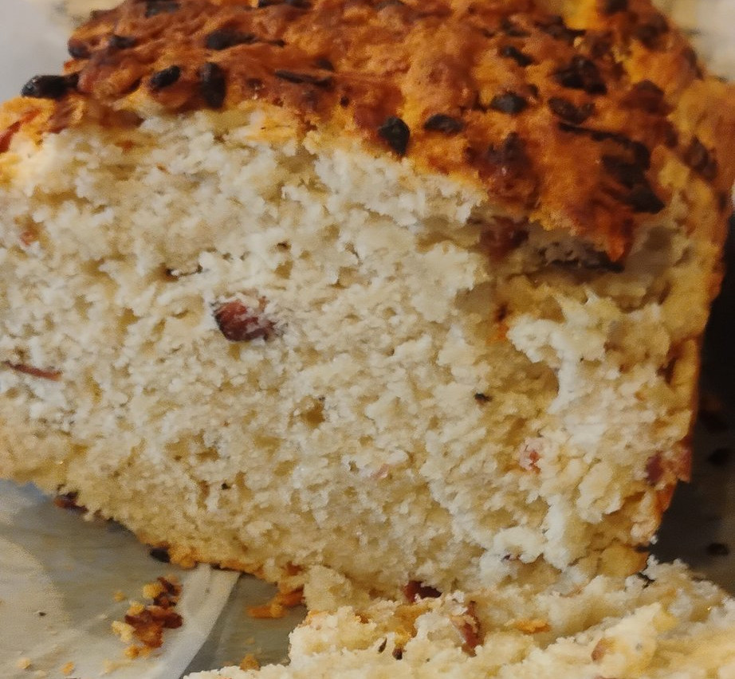

Home

Description
Recipe
Makes 1 loaf
Ingredients
- 2.5 cups (12.5 ounces) all-purpose flour
- 4 oz Gruyerre cheese, shredded
- 3 Tbsp sugar
- 4 tsp baking powder
- 1 tsp salt
- 1/2 tsp pepper
- 1.25 cups light beer
- 5 Tbsp unsalted better, melted and cooled
- 5 slices bacon
- 1/2 cup minced onion
Directions
- Set stove to meium and add bacon to pan once heated. Cook 5-7 minutes. Transfer to a paper towel to dry. Save fat in pan.
- While bacon cools, add 1/2 cup minced onions to pan and sautee. Stir frequently until softened. About 3 minutes then remove from pan.
- Adjust oven rack to middle position and set oven to 375 degrees (farenheit). Grease 8.5 inch*4.5 inch loafpan.
- Reserve 1 tablespoon of your melted butter.
- Stir together flour, bacon, onions, Gruyerre, sugar, baking powder, salt and pepper in a large bowl.
- Once dry ingredients are thoroughly mixed, stir in beer and the remaining 4 Tbsp of melted butter until just combined. Be cautious of overmixing.
- Scrape batter into previously greased pan(s) and lightly brush the reserved butter on top of loaf.
- Bake until golden brown, test with a toothpick should have a few crumbs if finished. Takes 40-45 minutes, remember to turn your pan halfway.
- Let cool 10 minutes before turning out onto a wire rack. Allow another hour to cool on the rack
Home